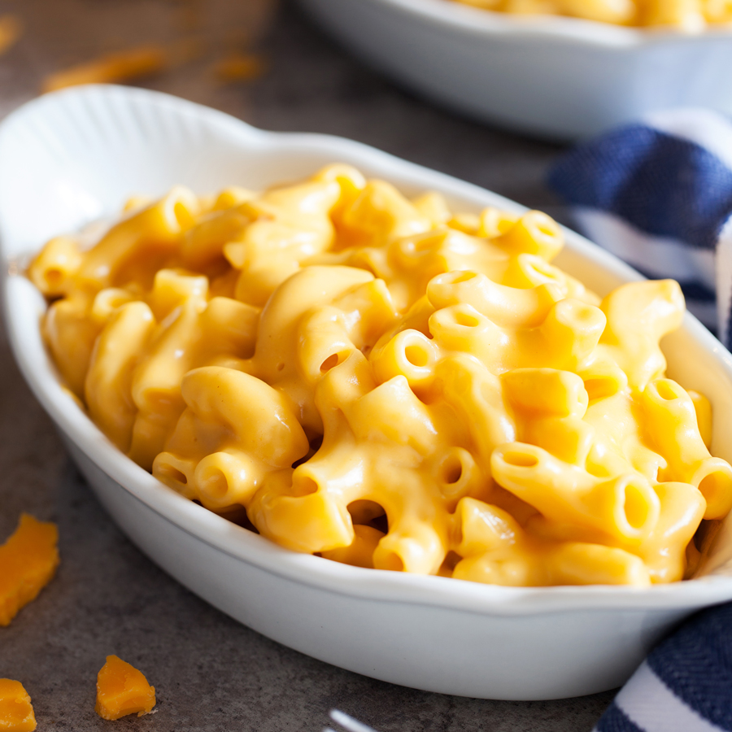

Macaroni Cheese

Description
Baked pasta with cheese.
Ingredients
- pre-boiled Macaroni (400g)
- Cheddar (300g)
- Butter (30g)
- Milk (0.5l)
- Flour (100g)
Steps
- Turn the oven on at 200°C and melt the butter in a small saucepan.
- Add the flour and mix it into a paste.
- Slowly add the milk, keeping the heat high and making sure that the paste doesn't stick to the sides or bottom of the saucepan. Continue until all the milk is added and wait until the sauce thickens.
- Add 2/3 of the cheese and stir it in.
- Put the pasta in a large baking tray, pour the completed sauce over it and sprinke the rest of the cheese on top.
- Cook in the oven for half an hour.
Return to recipes